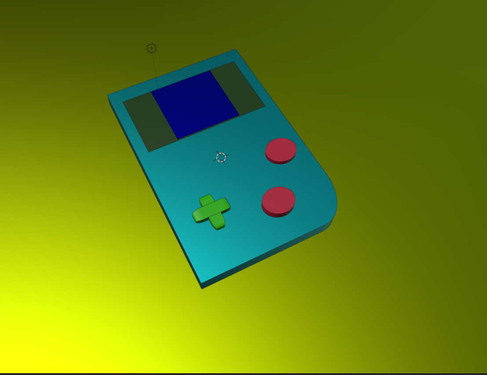
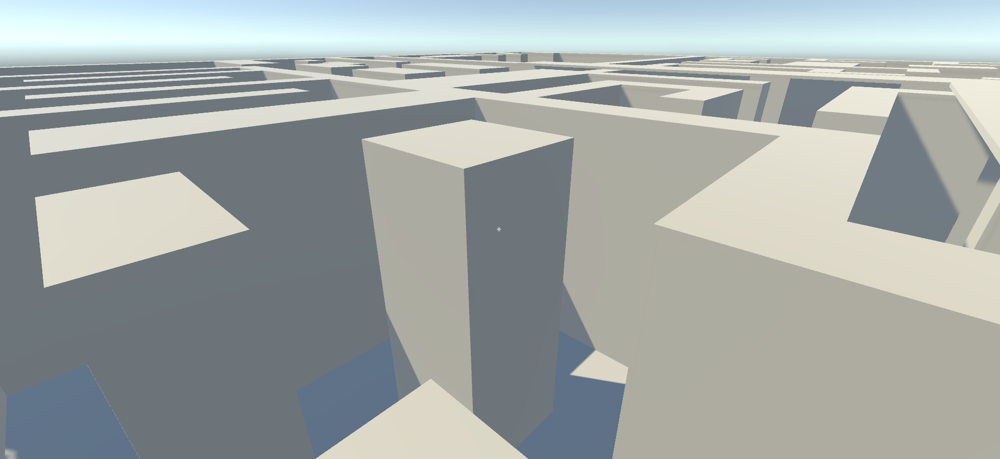
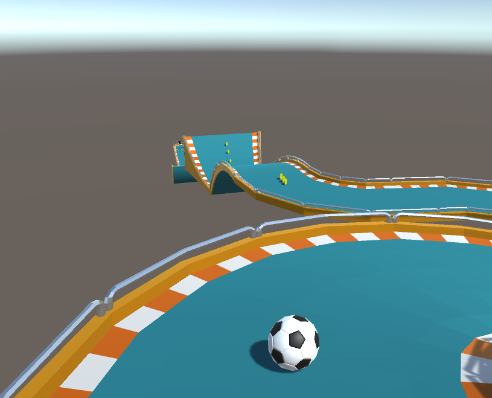
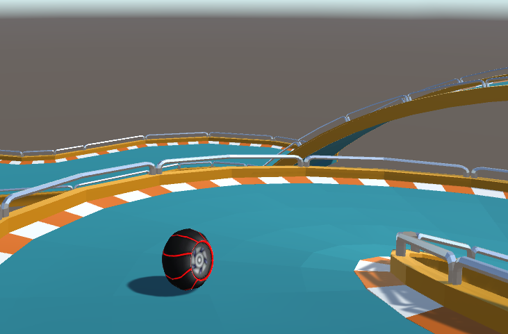

Gallerie des projets
Voici une liste des différents projets que j'ai réalisés au cours du temps:
Quelques modèles 3D (Blender) :
 |
|---|

Des projets Unity :
 |  |
|---|
Le jeu en première personne où il faut sortir d'un labyrinthe (non-terminé)
 |
|---|
Le jeu créé pendant le stage qui m'a fait découvrir le visual scripting sur Unity
 |  |  |
|---|
J'avais même créé un système de changement de skin car je m'ennuyais... (les modèles 3d m'étaient aussi donnés) À la base on devait juste choisir l'apparence de la boule, qui serait la même pendant tout le jeu mais j'ai rajouté un système pour changer de skin en cours de jeu avec les touches F1,F2...
Mes applications exportées en PWA :
CrazyCube

Révision des dates d'histoire du brevet

Révision de la Physique-Chimie

| Comment ai-je découvert l'informatique ? | Les logiciels utilisés |
|---|